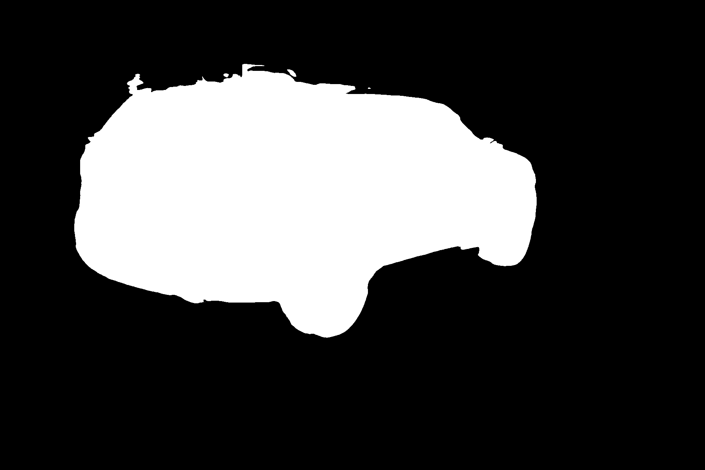

!git clone https://github.com/unifyai/ivy.git
!cd ivy && python3 -m pip install -q -e .
!git clone https://github.com/unifyai/models.git
!cd models && python3 -m pip install -q -e .
exit()Image Segmentation with Ivy UNet
Use the Ivy UNet model for image segmentation.
Make sure you are using the GPU when using this notebook!
If you already have Ivy and Ivy Models installed you can skip this cell, but if you are using Colab, you will have to install Ivy and Ivy Models manually. You can do so by running the cell below ⬇️
Keep in mind that for the package to be available, you will have to click on “Runtime > Restart Runtime” 😄
Imports
import ivy
import torch
import numpy as npData Preparation
Custom Preprocessing
# ref: https://github.com/milesial/Pytorch-UNet/blob/2f62e6b1c8e98022a6418d31a76f6abd800e5ae7/utils/data_loading.py#L65
def preprocess(mask_values, pil_img, scale, is_mask):
w, h = pil_img.size
newW, newH = int(scale * w), int(scale * h)
assert newW > 0 and newH > 0, 'Scale is too small, resized images would have no pixel'
pil_img = pil_img.resize((newW, newH), resample=Image.NEAREST if is_mask else Image.BICUBIC)
img = np.asarray(pil_img)
if is_mask:
mask = np.zeros((newH, newW), dtype=np.int64)
for i, v in enumerate(mask_values):
if img.ndim == 2:
mask[img == v] = i
else:
mask[(img == v).all(-1)] = i
return mask
else:
if img.ndim == 2:
img = img[np.newaxis, ...]
else:
img = img.transpose((2, 0, 1))
if (img > 1).any():
img = img / 255.0
return imgLoad the image example 🖼️
# Preprocess image
from PIL import Image
filename = "models/images/car.jpg"
full_img = Image.open(filename)
torch_img = torch.from_numpy(preprocess(None, full_img, 0.5, False)).unsqueeze(0).to("cuda")# Convert to ivy
ivy.set_backend("torch")
img = ivy.asarray(torch_img.permute((0, 2, 3, 1)), dtype="float32", device="gpu:0")
img_numpy = img.cpu().numpy()Visualise image
from IPython.display import Image as I, display
display(I(filename))
Model Inference
Initializing Native Torch UNet
torch_unet = torch.hub.load('milesial/Pytorch-UNet', 'unet_carvana', pretrained=True, scale=1.0)
torch_unet.to("cuda")
torch_unet.eval()Initializing Ivy UNet with Pretrained Weights ⬇️
The model is then initialized with the Pretrained Weights when pretrained=True 🔗.
# load the unet model from ivy_models
import ivy_models
ivy_unet = ivy_models.unet_carvana(n_channels=3, n_classes=2, pretrained=True)Compile the forward pass for efficiency.
ivy_unet.compile(args=(img,))Custom masking function
# ref: https://github.com/milesial/Pytorch-UNet/blob/2f62e6b1c8e98022a6418d31a76f6abd800e5ae7/predict.py#L62
def mask_to_image(mask: np.ndarray, mask_values):
if isinstance(mask_values[0], list):
out = np.zeros((mask.shape[-2], mask.shape[-1], len(mask_values[0])), dtype=np.uint8)
elif mask_values == [0, 1]:
out = np.zeros((mask.shape[-2], mask.shape[-1]), dtype=bool)
else:
out = np.zeros((mask.shape[-2], mask.shape[-1]), dtype=np.uint8)
if mask.ndim == 3:
mask = np.argmax(mask, axis=0)
for i, v in enumerate(mask_values):
out[mask == i] = v
return Image.fromarray(out)Use the model to segment your images 🚀
First, we will generate the reference mask from the reference model.
- Torch UNet
torch_output = torch_unet(torch_img.to(torch.float32))
torch_output = torch.nn.functional.interpolate(torch_output, (full_img.size[1], full_img.size[0]), mode="bilinear")
torch_mask = torch_output.argmax(axis=1)
torch_mask = torch_mask[0].squeeze().cpu().numpy()
torch_result = mask_to_image(torch_mask, [0,1])
torch_result.show()
Next we will generate the mask from the Ivy native implementation
- Ivy UNet
output = ivy_unet(img)
output = ivy.interpolate(output.permute((0, 3, 1, 2)), (full_img.size[1], full_img.size[0]), mode="bilinear")
mask = output.argmax(axis=1)
mask = ivy.squeeze(mask[0], axis=None).to_numpy()
result = mask_to_image(mask, [0,1])
result.show()
Great! The ivy native model and the torch model give the same result!
TensorFlow backend
Let’s look at using the TensorFlow backend.
import tensorflow as tf
ivy.set_backend("tensorflow")
ivy_unet = ivy_models.unet_carvana(n_channels=3, n_classes=2, pretrained=True)
img_tf = ivy.asarray(img_numpy)
ivy_unet = ivy.compile(ivy_unet, args=(img_tf,))output = ivy_unet(img_tf)
output = ivy.interpolate(tf.transpose(output, (0, 3, 1, 2)), (full_img.size[1], full_img.size[0]), mode="bilinear")
mask = tf.math.argmax(output, axis=1)
mask = tf.squeeze(mask[0], axis=None).numpy()
result = mask_to_image(mask, [0,1])
result.show()
As expected, we ended up with the same mask as before. Note how with the TensorFlow backend, we were able to use TensorFlow native functions to do the post-processing.
JAX
Next up is the JAX backend. We’ve used a lot of the notebook memory so far, so we’ll free up some space.
del torch_unet
del ivy_unet
torch.cuda.empty_cache()!pip install -q dm-haiku
import jax
import haiku as hk
jax.config.update('jax_enable_x64', True)
ivy.set_backend("jax")
ivy_unet = ivy_models.unet_carvana(n_channels=3, n_classes=2, pretrained=True)img_jax = ivy.asarray(img_numpy)
output = ivy_unet(img_jax)
output = ivy.interpolate(ivy.permute_dims(output, (0, 3, 1, 2)), (full_img.size[1], full_img.size[0]), mode="bilinear")
mask = output.argmax(axis=1)
mask = ivy.squeeze(mask[0], axis=None).to_numpy()
result = mask_to_image(mask, [0,1])
result.show()
Once again, we ended up with the same mask as in the reference torch implementation!
Appendix: the Ivy native implementation of UNet
class UNET(ivy.Module):
def __init__(self, n_channels, n_classes, bilinear=False, v=None):
self.n_channels = n_channels
self.n_classes = n_classes
self.bilinear = bilinear
self.factor = 2 if bilinear else 1
super(UNET, self).__init__(v=v)
def _build(self, *args, **kwargs):
self.inc = UNetDoubleConv(self.n_channels, 64)
self.down1 = UNetDown(64, 128)
self.down2 = UNetDown(128, 256)
self.down3 = UNetDown(256, 512)
self.down4 = UNetDown(512, 1024 // self.factor)
self.up1 = UNetUp(1024, 512 // self.factor, self.bilinear)
self.up2 = UNetUp(512, 256 // self.factor, self.bilinear)
self.up3 = UNetUp(256, 128 // self.factor, self.bilinear)
self.up4 = UNetUp(128, 64, self.bilinear)
self.outc = UNetOutConv(64, self.n_classes)
def _forward(self, x):
x1 = self.inc(x)
x2 = self.down1(x1)
x3 = self.down2(x2)
x4 = self.down3(x3)
x5 = self.down4(x4)
x = self.up1(x5, x4)
x = self.up2(x, x3)
x = self.up3(x, x2)
x = self.up4(x, x1)
logits = self.outc(x)
return logits
class UNetDoubleConv(ivy.Module):
def __init__(self, in_channels, out_channels, mid_channels=None):
self.in_channels = in_channels
self.out_channels = out_channels
self.mid_channels = mid_channels if mid_channels else out_channels
super(UNetDoubleConv, self).__init__()
def _build(self, *args, **kwargs):
self.double_conv = ivy.Sequential(
ivy.Conv2D(
self.in_channels, self.mid_channels, [3, 3], 1, 1, with_bias=False
),
ivy.BatchNorm2D(self.mid_channels),
ivy.ReLU(),
ivy.Conv2D(
self.mid_channels, self.out_channels, [3, 3], 1, 1, with_bias=False
),
ivy.BatchNorm2D(self.out_channels),
ivy.ReLU(),
)
def _forward(self, x):
return self.double_conv(x)
class UNetDown(ivy.Module):
"""Downscaling with maxpool then double conv"""
def __init__(self, in_channels, out_channels):
self.in_channels = in_channels
self.out_channels = out_channels
super().__init__()
def _build(self, *args, **kwargs):
self.maxpool_conv = ivy.Sequential(
ivy.MaxPool2D(2, 2, 0), UNetDoubleConv(self.in_channels, self.out_channels)
)
def _forward(self, x):
return self.maxpool_conv(x)
class UNetUp(ivy.Module):
"""Upscaling then double conv"""
def __init__(self, in_channels, out_channels, bilinear=True):
self.in_channels = in_channels
self.out_channels = out_channels
self.bilinear = bilinear
super().__init__()
def _build(self, *args, **kwargs):
if self.bilinear:
self.up = ivy.interpolate(
scale_factor=2, mode="bilinear", align_corners=True
)
self.conv = UNetDoubleConv(
self.in_channels, self.out_channels, self.in_channels // 2
)
else:
self.up = ivy.Conv2DTranspose(
self.in_channels, self.in_channels // 2, [2, 2], 2, "VALID"
)
self.conv = UNetDoubleConv(self.in_channels, self.out_channels)
def _forward(self, x1, x2):
x1 = self.up(x1)
# input is BHWC
diff_H = x2.shape[1] - x1.shape[1]
diff_W = x2.shape[2] - x1.shape[2]
pad_width = (
(0, 0),
(diff_H - diff_H // 2, diff_H // 2),
(diff_W // 2, diff_W - diff_W // 2),
(0, 0),
)
x1 = ivy.constant_pad(x1, pad_width)
x = ivy.concat((x2, x1), axis=3)
return self.conv(x)
class UNetOutConv(ivy.Module):
def __init__(self, in_channels, out_channels):
self.in_channels = in_channels
self.out_channels = out_channels
super(UNetOutConv, self).__init__()
def _build(self, *args, **kwargs):
self.conv = ivy.Conv2D(self.in_channels, self.out_channels, [1, 1], 1, 0)
def _forward(self, x):
return self.conv(x)